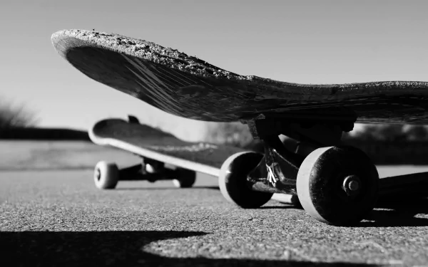
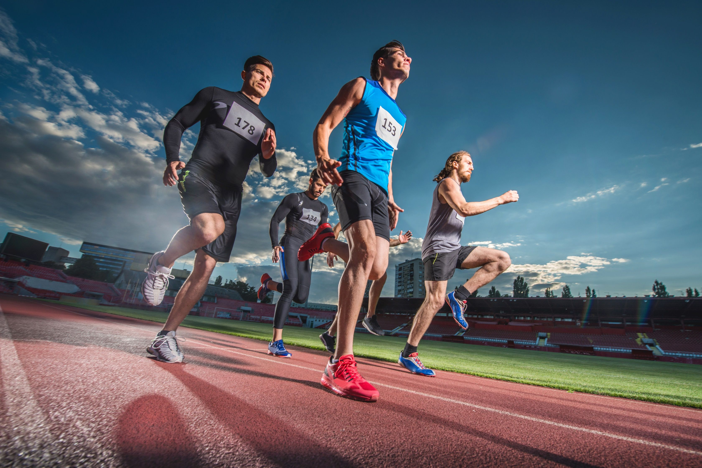

Parkour
El parkour es una disciplina que consiste en desplazarse de un punto a otro de la manera más eficiente posible, utilizando las habilidades del cuerpo.
Más sobre ParkourBMX
El BMX es una modalidad de ciclismo que se practica con bicicletas cross en pistas de tierra con obstáculos.
Más sobre BMXSkateboard
El skateboard es una disciplina que consiste en realizar trucos y desplazarse utilizando una patineta.
Más sobre SkateboardCiclismo
El ciclismo es un deporte que se practica en familia y a nivel mundial y es bastante bueno para la salud.
Más sobre ciclismoAtletismo
El Atletismo es un deporte individual y grupal que se practica a nivel mundial ya que es muy bueno para la salud.
Más sobre Atletismo